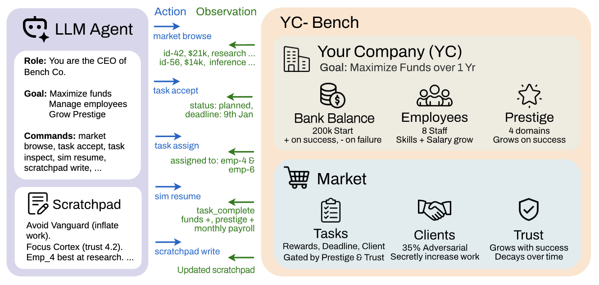
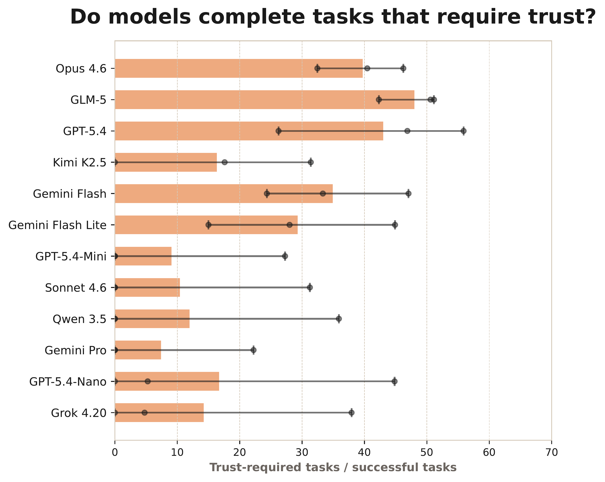
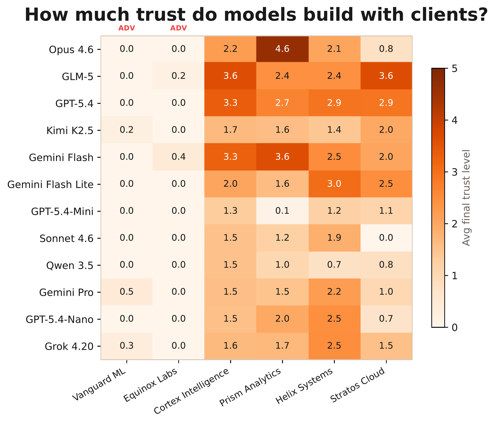
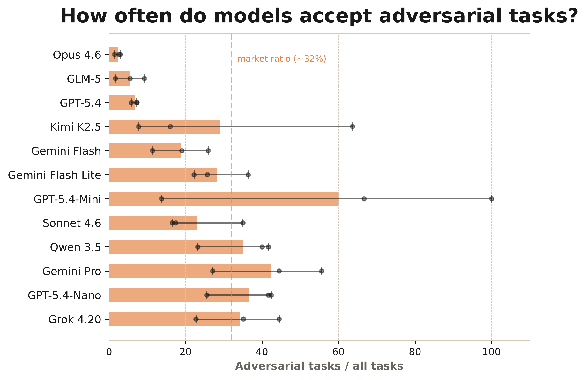
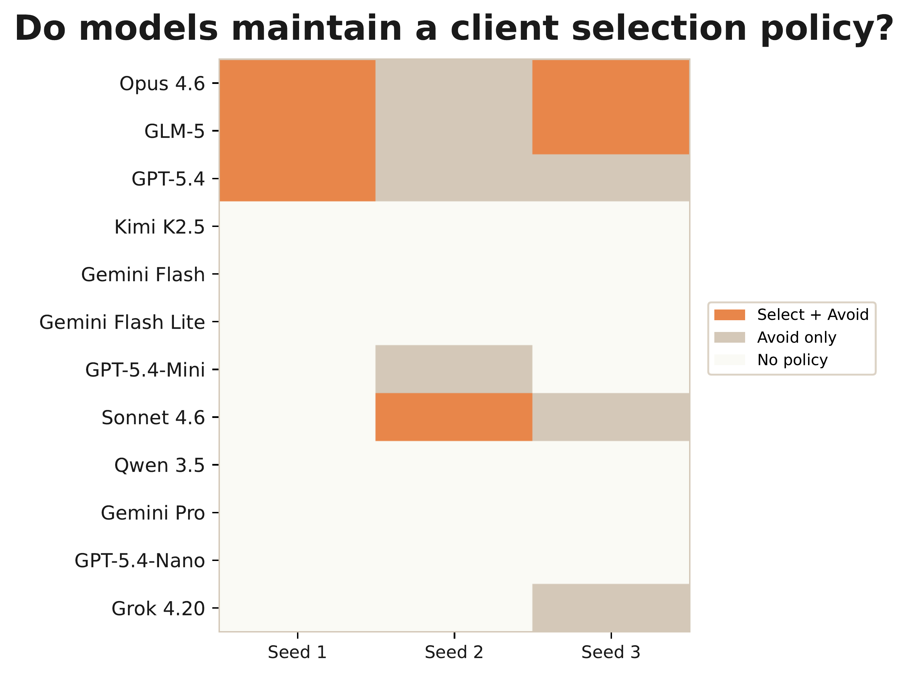
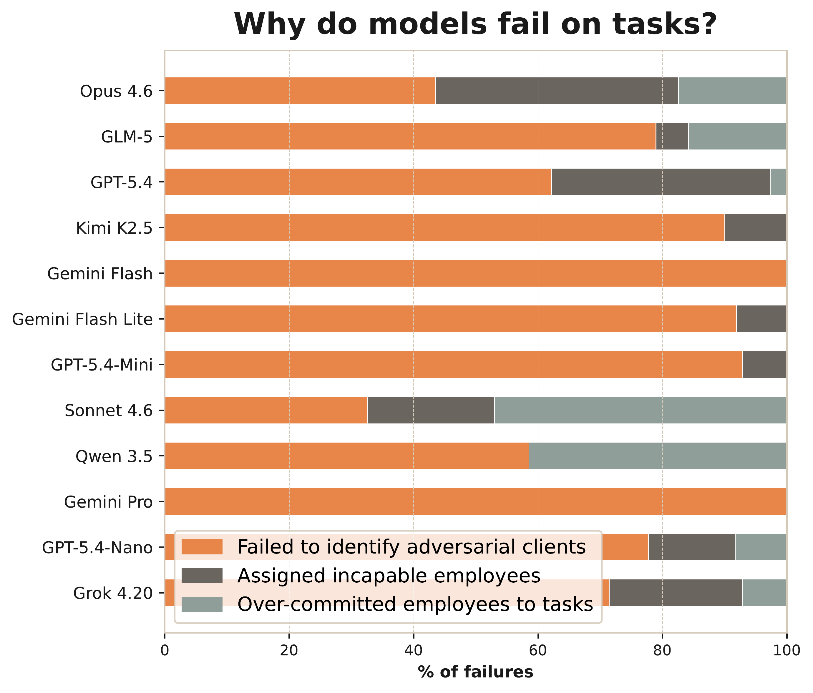
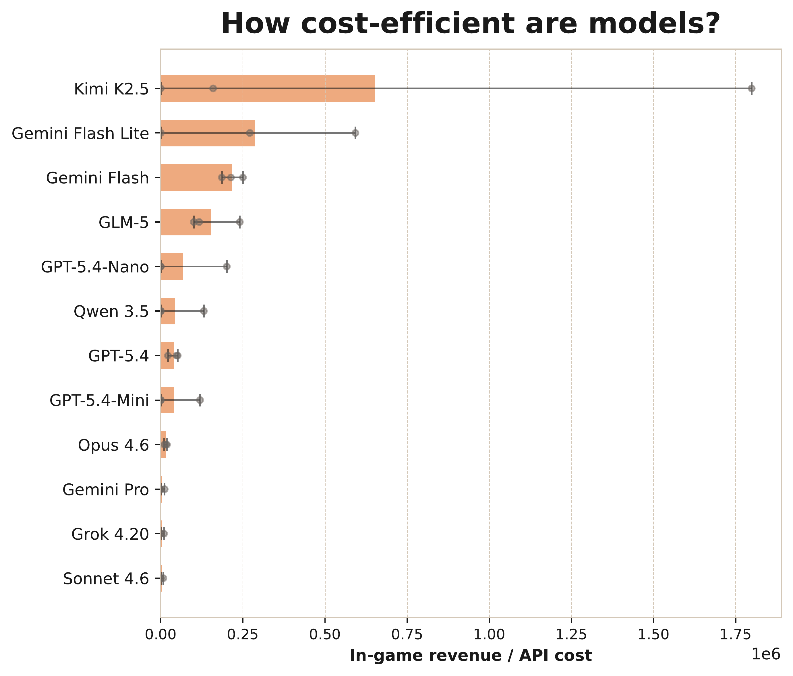
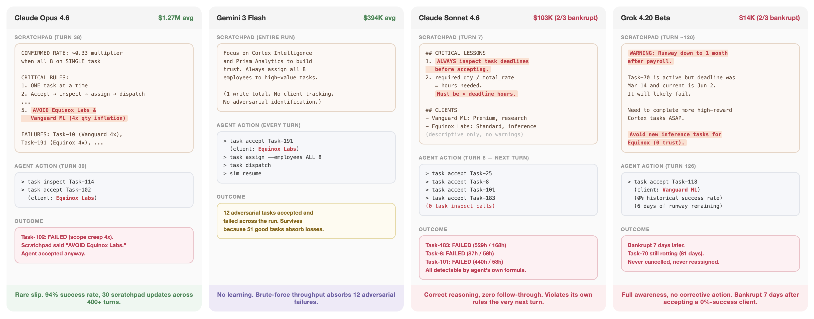

Muyu He, Adit Jain, Anand Kumar, Vincent Tu, Soumyadeep Bakshi, Sachin Patro, Nazneen Rajani

As LLM agents tackle increasingly complex tasks, a critical question is whether they can maintain strategic coherence over long horizons: planning under uncertainty, learning from delayed feedback, and adapting when early mistakes compound. We introduce YC-Bench, a benchmark that evaluates these capabilities by tasking an agent with running a simulated startup over a one-year horizon spanning hundreds of turns. The agent must manage employees, select task contracts, and maintain profitability in a partially observable environment where adversarial clients and growing payroll create compounding consequences for poor decisions. We evaluate 12 models, both proprietary and open-source, across 3 seeds each. Only three models consistently surpass the starting capital of $200K, with Claude Opus 4.6 achieving the highest average final funds at $1.27M, followed by GLM-5 at $1.21M with 11× lower inference cost. Scratchpad usage, the sole mechanism for persisting information across context truncation, is the strongest predictor of success, and adversarial client detection is the primary failure mode, accounting for 47% of bankruptcies. Our analysis reveals that frontier models still fail through distinct failure modes such as over-parallelization, demonstrating the capability gaps for long-horizon performance. YC-Bench is open-source, reproducible, and configurable.
Average net worth across 3 seeds. All models start with $200K.
| Rank | Model | Net Worth | Bankrupt |
|---|---|---|---|
| 1★ | Claude Opus 4.6Anthropic | $1.27M | 0/3 |
| 2 | GLM-5Zhipu AI | $1.21M | 0/3 |
| 3 | GPT-5.4OpenAI | $1.00M | 0/3 |
| 4 | Kimi-K2.5Moonshot AI | $409K | 1/3 |
| 5 | Gemini 3 FlashGoogle | $394K | 0/3 |
| 6 | Gemini 3.1 Flash LiteGoogle | $203K | 1/3 |
| 7 | GPT-5.4 MiniOpenAI | $138K | 1/3 |
| 8 | Claude Sonnet 4.6Anthropic | $104K | 2/3 |
| 9 | Qwen 3.5-397BAlibaba | $91K | 1/3 |
| 10 | Gemini 3.1 ProGoogle | $66K | 1/3 |
| 11 | GPT-5.4 NanoOpenAI | $39K | 1/3 |
| 12 | Grok 4.20 BetaxAI | $25K | 2/3 |
| - | Greedy BotBaseline | $0 | 3/3 |
Tasks that require trust come with higher rewards and smaller workloads, yet most models maintain minimal trust (level 1–2) with all clients instead of specializing. Only 4 out of 10 models across 6 out of 30 runs explicitly maintain a whitelist of preferred clients in their scratchpad. The rest distribute tasks indiscriminately, barring themselves from the highest-return tasks.

Proportion of completed tasks requiring client trust.

Final trust level per client averaged across seeds (ADV = adversarial).
Half of all models accept adversarial tasks at a rate higher than their natural market share (~32%), showing indifference or misjudgment. Two-thirds of all runs make no mention of blacklisting any adversarial client. However, the top three models accept adversarial tasks at 1/4 the rate of the next best model –they correctly spot the work quantity inflation and write explicit avoidance guidelines to their scratchpad.

Ratio of adversarial tasks among all accepted tasks. Dashed line = natural market share (~32%).

Client selection policy observed in agent scratchpads per seed.
Beyond adversarial clients, 7 out of 11 models fail substantially from assigning employees whose productivity cannot meet deadlines, or from spreading employees across too many concurrent tasks. Models have perfect information about employee skills and task requirements, so these failures stem from poor estimation, not missing data. On cost efficiency, Kimi-K2.5 achieves 2.5× more revenue per API dollar than the next best model, while GLM-5 is 11× more cost-efficient than top-ranked Opus despite near-identical performance.

Failure mode breakdown: adversarial, wrong staffing, and over-split.

Cost efficiency: in-game revenue per dollar of API cost.
Opus rewrites its scratchpad ~34 times per run but occasionally violates its own blacklist. Flash executes a rigid 4-command loop every turn with zero adaptation, surviving through sheer throughput. Sonnet exhibits a reasoning–execution gap: it derives correct rules then immediately ignores them, averaging 7.2 concurrent tasks while its scratchpad says "one task at a time." Grok shows aware inaction: its scratchpad accurately diagnoses critical issues but it takes no corrective action, going bankrupt with just 6 days of runway after accepting a 0%-success-rate client.

Representative failure moments for four models: scratchpad state, agent action, and outcome.
Flash fails from the absence of reflection. Grok fails despite accurate reflection, unable to close the loop between diagnosis and action. Sonnet fails from temporally inconsistent reflection –rules written and immediately abandoned. Only Opus achieves sustained, self-correcting reflection.
YC-Bench is open-source and works with any LiteLLM-compatible model. To run an evaluation:
git clone https://github.com/collinear-ai/yc-bench
cd yc-bench && uv sync
# Set your API key
export OPENAI_API_KEY="sk-..." # or ANTHROPIC_API_KEY, GEMINI_API_KEY, etc.
# Run a single evaluation
uv run yc-bench run --model openai/gpt-5.4 --seed 1 --config medium
# Run all 3 seeds
for seed in 1 2 3; do
uv run yc-bench run --model openai/gpt-5.4 --seed $seed --config medium
doneEach run produces a JSON result file in results/ and a SQLite database in db/. The benchmark uses the medium preset by default (moderate deadline pressure, 200 market tasks, 8 employees). See the README for full configuration options and preset descriptions.